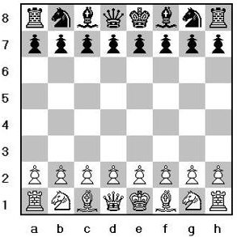

O Tabuleiro
O tabuleiro de xadrez possui 8 linhas (1 a 8) e 8 colunas (a a h), formando 64 casas alternadas em cores claras e escuras.
As Peças
Existem 6 tipos de peças, cada jogador possui 16 peças no total.
 Peão: move 1 casa para frente (ou 2 no primeiro movimento).
Peão: move 1 casa para frente (ou 2 no primeiro movimento). Torre: move horizontal ou vertical.
Torre: move horizontal ou vertical. Cavalo: movimento em "L", pula peças.
Cavalo: movimento em "L", pula peças. Bispo: move diagonal.
Bispo: move diagonal. Dama: move horizontal, vertical e diagonal.
Dama: move horizontal, vertical e diagonal. Rei: move 1 casa em qualquer direção.
Rei: move 1 casa em qualquer direção.
Objetivo do Jogo
O objetivo é dar xeque-mate no rei adversário, colocando-o sob ataque sem possibilidade de fuga.
Dicas para Iniciantes
- Controle o centro do tabuleiro.
- Desenvolva suas peças rapidamente.
- Proteja seu rei com o roque.
- Observe sempre os movimentos do adversário.